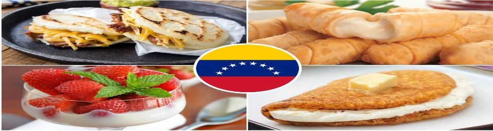

Bienvenidos
La cocina venezolana es una de las más sabrosas del continente americano. Este artículo es una aproximación rápida a sus recetas más populares. En siguientes entregas, repasaremos productos y restaurantes
Recetas Destacadas
Cómo hacer patacones
Por: Angel Lozano
Asado negro Por: Maria Fernandez
Asado negro Por: Maria Fernandez